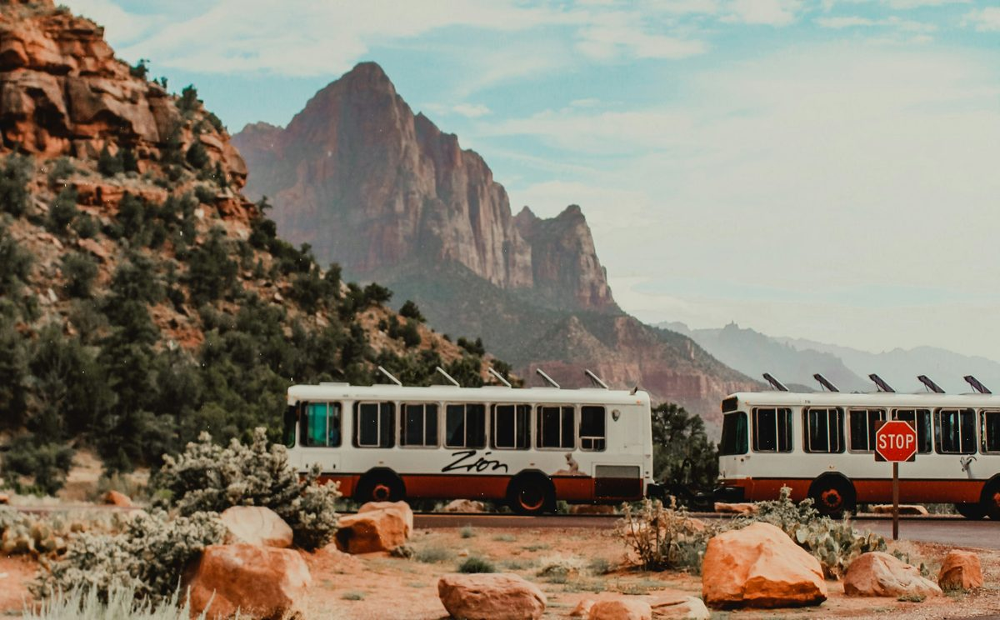

Zion solved its traffic problem 25 years ago. Every smaller park has the same problem and none of the budget.
The biggest parks proved mandatory internal transit works — with 60-foot articulated buses and a $33 million federal grant. Hundreds of state and regional parks agree with the model and correctly conclude they can't afford the version they just looked at.
On busy days at Starved Rock State Park in Illinois, the main lot near the Visitor Center fills between 11 a.m. and 3 p.m., the lots sometimes close when they fill, and the state's own Department of Natural Resources warns visitors to expect travel delays and possible parking closures. The advice to first-time visitors is blunt: no shuttles run between lots — park where you plan to hike. (Starved Rock Hikers; Illinois DNR)
Park where you plan to hike. In a park with more than 13 miles of trails across 2,600-plus acres, where the canyons and waterfalls people drive hours to see are spread across the map, that instruction quietly admits something: if you want to see more than one part of Starved Rock in a day, you get back in your car, drive to another lot, and hope it isn't already closed.
This is the reality at hundreds of state and regional parks across the country. And it's a solved problem — the biggest parks solved it decades ago. The smaller ones just haven't been given a version of the solution that fits them.
What Zion proved
Zion National Park is the case study every park operator should know.
By the late 1990s, Zion Canyon was choking on its own popularity. Cars lined the scenic drive, parked on the shoulders, and crushed the vegetation. As Zion's transportation manager recalled of that era, "There weren't a lot of animals in the canyon." (Rewiring America)
In 2000, the park did something drastic: it made an internal shuttle the mandatory way to see Zion Canyon. During shuttle season, private vehicles aren't allowed up the canyon at all. Everyone rides.
Twenty-five years later, the verdict is overwhelming. The shuttles have been boarded more than 95 million times across 25 seasons. Each one — as the message painted on the side of the buses states plainly — replaces 29 cars, and the Park Service estimates the system keeps 8.67 metric tons of greenhouse gases a day out of the canyon compared with those riders driving themselves. The vegetation came back. The animals came back. (National Park Service)
Grand Canyon runs a similar system on its car-free Hermit Road. Acadia's Island Explorer moves visitors across Mount Desert Island. Bryce, Glacier, and others run their own versions. The largest, most-visited parks in America have independently arrived at the same conclusion: past a certain crowd size, you cannot let every visitor drive every road. You need a shared system that moves people and leaves the cars behind.
The model works. It's proven at the scale of millions of visitors, over a quarter century, at the crown jewels of the park system.
Here's the catch.
The solution was built for giants
Zion's shuttle fleet is a fleet of full-size transit coaches — 60-foot articulated electric buses that seat 48 and carry up to 90 people, plus 40-foot buses running the town line. The park acquired the current electric fleet with a $33 million federal transit grant. (National Park Service; CleanTechnica)
That is the right solution for Zion. Zion has nearly 5 million annual visitors, a paved scenic canyon road engineered to handle 60-foot buses, a shuttle season that runs most of the year, and the visitation numbers to justify permanent, large-scale, federally funded transit infrastructure.
Starved Rock is not Zion. Neither is the overwhelming majority of the country's state and regional parks. They have:
- A different scale of crowd. Big enough to overwhelm the parking lots on peak weekends and fall-foliage days — but not 5 million people a year, and not evenly across the calendar. The crush is seasonal and spiky, not constant.
- Different terrain. State park access roads, gravel lots, and connector paths between trailheads aren't always built for 60-foot articulated transit coaches. The vehicle that works on Zion's paved canyon highway is the wrong tool for a two-lane park road and a gravel overflow lot.
- A fraction of the budget. A $33 million federal transit grant is not walking through the door of a typical state park. The whole point of a state park's economics is that it runs lean.
So the smaller park looks at the Zion model, agrees with it completely, and then correctly concludes it can't afford the version it just looked at. And nothing changes. The lots keep filling by mid-morning. The road reroutes stay in place. The "park where you plan to hike" sign stays up. The solution exists — it's just been built at a size and price that doesn't fit.
Right-sizing the proven idea
The idea Zion proved doesn't actually require 60-foot buses and an eight-figure grant. Those are what Zion's scale required. The underlying concept — a shared vehicle that circulates visitors between the parking areas, the trailheads, and the visitor center so they don't have to move their cars — scales down.
A right-sized park shuttle looks different from a Zion coach:
It's sized for the roads that exist. A 27-passenger vehicle that runs on pavement, gravel, and packed dirt fits the connector roads and overflow lots of a state park, where a 60-foot articulated bus never could. It goes where the park already is, instead of requiring the park to be rebuilt around it.
It deploys for the season and leaves. A park whose crush is fifteen fall weekends and the summer holidays doesn't need permanent transit infrastructure sitting idle all winter. It needs a system that arrives for the surge — foliage season, Memorial Day through Labor Day, festival weekends — and comes down when the crowds thin. That's a fundamentally different, and far smaller, financial commitment than a permanent fleet. It's the same deployable model we bring to festivals, construction sites, and stadiums, and the same rent-don't-own logic that fits any operator running against a seasonal calendar: capacity that shows up when the demand does.
It's accessible by default. This is the part of the parks conversation that too often gets left out. A 2,600-acre park with canyon stairs and trail elevation is, for a huge share of the population, largely off-limits — not because they don't want to see it, but because they physically can't cover the ground between the lot, the visitor center, and the overlooks. An older visitor, someone with a mobility limitation, a family with a stroller — the "park where you hike and walk the rest" model quietly excludes all of them. A shuttle with level boarding to the trailheads and overlooks is, for those visitors, the difference between seeing the park and seeing the parking lot.
To be clear about what this is and isn't: this isn't about putting vehicles on the trails or motorizing the backcountry. Zion's model — and the right-sized version of it — is about the front-country: the lots, the connector roads, the visitor center, the trailheads. The wilderness stays wilderness. The goal is to get people out of their circling cars and onto their feet at the trailhead, not to drive them down the trail.
Running a park that fills its lots by 11 a.m.?
FlexTram deploys right-sized, all-terrain transit for parks and recreation areas — short-term rentals for foliage season and peak weekends, seasonal leases, and turnkey plans built around your actual visitation curve. ADA service standard.
The gateway town wins too
There's a reason Zion's shuttle is described by the Park Service as "a vital connection to rural Utah communities." (National Park Service) When visitors aren't trapped in their cars hunting for parking, they spend time — and money — in the town at the park's edge.
The same logic is driving the effort to reconnect Illinois' Starved Rock to passenger rail through the neighboring village of Utica. Advocates note that the village sits directly across the river from the park, a 10-to-15-minute ride away, and that a shuttle connection would let visitors "come up to Mill Street for a drink or dinner and catch a later train home." The gateway town's businesses benefit precisely when the park's internal circulation works and visitors aren't just parking, hiking, and fleeing the congestion. (High Speed Rail Alliance)
A park that moves people well is a park people stay longer at. And a park people stay longer at feeds the local economy around it. It's the same mechanism we've written about in Friction Is Eating Your Demand — the visit that gets cut short, or never attempted, is economic activity that never shows up in anyone's report because it never happened. The transit isn't just a congestion fix. It's an economic multiplier for the small communities that ring these parks.
The model is proven. The fit is the opportunity.
The hard question — does mandatory internal park transit actually work — was answered decades ago, definitively, by Zion. Visitors accept it. Congestion drops. The landscape recovers. The gateway town prospers. One shared vehicle takes 29 cars off the road.
It's the same conclusion cities reached about fixed routes and posted schedules a century ago, and the same one that separates a system from a pile of individual units: when flow is predictable — and a park's flow is extremely predictable, from the lot to the visitor center to the trailhead — you serve the corridor, not the individual.
The only thing that hasn't happened is right-sizing that proven idea for the hundreds of parks that will never see a $33 million federal transit grant or need a 60-foot bus — the Starved Rocks of the country, filling their lots by 11 a.m., rerouting traffic on peak weekends, and telling visitors to just park where they plan to hike because there's no other option.
There is another option. It's the one Zion proved. It just needs to be built to fit.
The biggest parks showed the whole system what works. The smaller parks don't need a smaller Zion — they need the same idea, sized for the roads they have and the budget they run on.
— The FlexTram Team
Frequently asked questions
Does a mandatory park shuttle system actually work?
Yes, and it has been proven at scale for a quarter century. Zion National Park made an internal shuttle the only way to see Zion Canyon in 2000, closing the canyon road to private vehicles during shuttle season. The system has been boarded more than 95 million times across 25 seasons. Congestion dropped, the roadside vegetation recovered, and wildlife returned to the canyon. Grand Canyon, Acadia, Bryce, and Glacier all run their own versions. The open question in the parks world is no longer whether internal transit works, but what it costs and what size vehicle it takes.
Why can't a state park just copy the Zion shuttle model?
Because Zion's version was built for Zion's scale. The fleet is made up of 60-foot articulated buses that seat 48 and carry up to 90 people, plus 40-foot buses on the town line, and the current electric fleet was acquired with a $33 million federal transit grant. That is the right answer for a park with nearly 5 million annual visitors and a paved canyon highway engineered for coaches. A typical state park has a spiky seasonal crowd rather than a constant one, two-lane access roads and gravel overflow lots that a 60-foot articulated bus cannot use, and no path to an eight-figure federal grant. The model is correct; the packaging doesn't transfer.
What does a right-sized park shuttle look like?
It is sized for the roads that already exist rather than requiring the park to be rebuilt around it. A 27-passenger vehicle with independently turning axles operates on pavement, gravel, grass, and packed dirt, which is what connector roads and overflow lots at state parks actually are. It circulates visitors between the parking areas, the visitor center, and the trailheads so people don't have to move their cars to see a second part of the park. And it is deployable rather than permanent, so a park can run it for foliage season or Memorial Day through Labor Day without carrying fleet infrastructure through the winter.
Does a park shuttle mean putting vehicles on the trails?
No. This is front-country circulation only: the parking lots, the connector roads, the visitor center, and the trailheads. The wilderness stays wilderness. The goal is the opposite of motorizing the backcountry — it's to get visitors out of cars that are circling for parking and onto their feet at the trailhead, which is the same thing Zion's model accomplishes inside the canyon.
How does a park shuttle improve accessibility?
A large park with trail elevation and stairs is effectively off-limits to a substantial share of the population — not because those visitors don't want to be there, but because they cannot cover the distance between the lot, the visitor center, and the overlooks. The common instruction to park where you plan to hike quietly excludes older visitors, people with mobility limitations, and families with strollers. A shuttle with level boarding that serves the trailheads and overlooks turns a park those visitors could only see from the parking lot into one they can actually experience — and it does it with the same vehicle serving everyone, rather than a separate parallel service.
Related reading
The model is proven. Let's size it to your park.
FlexTram deploys right-sized, all-terrain transit systems for parks, recreation areas, and seasonal destinations — moving visitors between parking, trailheads, and visitor centers on the roads that already exist, for the season the crowds actually show up. ADA-accessible as standard. Equipment rentals, full-service operations, and program efficiency studies available.